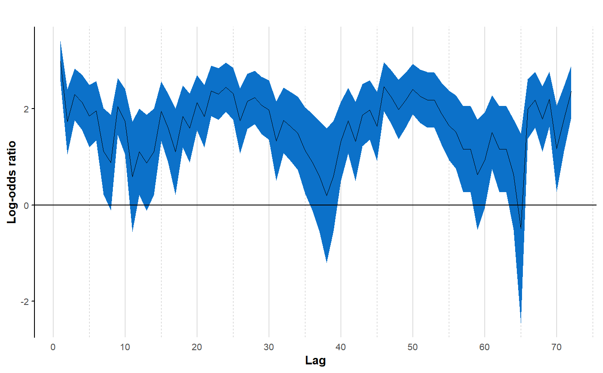

Estimates of pairwise log-odds ratios and associated 95% confidence intervals for each lag between 1 and max_lag calculated by the lorelogram function are plotted against the temporal or spatial lag (x-axis). The plotted lorelogram provides a graphical description of how correlation between outcomes changes as we increase the distance (in space or time) between sampling occassions. This function provides arguments for the customization of several aspects of the plot.
lor_plot(data, save_LOR_plot = FALSE, outDir = "", colour = "#0C71C9", linetype = "solid", title = "", x_axis_title = "Lag", y_axis_title = "Log-odds ratio", ylim = NULL, x_break = 10, alpha = 1)
| data | output of |
|---|---|
| save_LOR_plot | logical. Create a .jpg file of the results (default: FALSE)? |
| outDir | character. Conditional on |
| colour | character. Color to fill the confidence interval band (default: "#0C71C9"). |
| linetype | character. Linetype for the average log-odds ratio values (default: "solid"). It accepts all the linetype available for ggplot2::geom_line. |
| title | character. Title of the plot (default: NULL). |
| x_axis_title | character. Title of x-axis of the plot (default: "Lag"). |
| y_axis_title | character. Title of y-axis of the plot (default: "Log-odds ratio"). |
| ylim | numeric. Vector of two values |
| x_break | numeric. Unit-lag distance between primary breaks in the x_axis (default: 10). |
| alpha | numeric. Set transparency of the band describing the confidence interval. Should be a value between 0 and 1 (default: 1). |
The function returns a plot of the estimates of pairwise log-odds ratios and associated 95% confidence intervals for each lag between 1 and max_lag.
data must be a data.frame object containing the numeric output of the lorelogram function. Visual aspects of the lorelogram plot such as color and transparency of the confidence interval band, linetype of the curve representing the average log-odds ratios estimates, title and x- and y-axis labels, can be customized and the resulting plot can be saved in a folder of user choice.
# import data and estimate log-odds ratio data(GrayFox_Hour) lor <- lorelogram(GrayFox_Hour, max_lag = 72, plot_LOR = FALSE) # basic plot lor_plot(lor)# customized plot lor_plot(lor, colour = "red", alpha = 0.7, title = "My lorelogram", x_break = 24, x_axis_title = "Time Lag (Hour)")